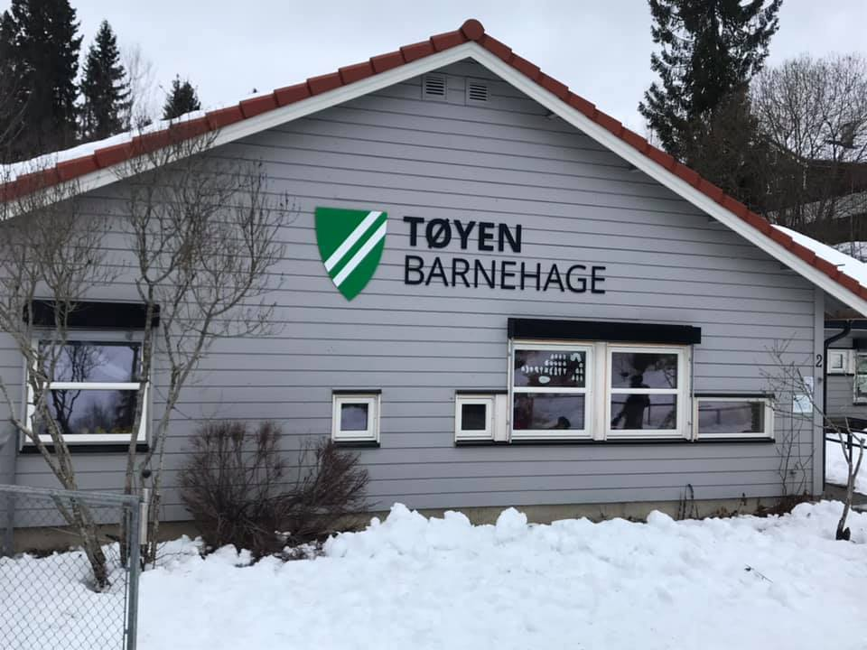

Fortsatt usikker framtid for Tøyen barnehage
For mange barnehageplasser i Nittedal skaper store uenigheter. Skal Hakadal-barnehagen legges ned? Den lokale befolkningen sier nei – og stusser over sakens timing.
Hovedutvalget for oppvekst og utdanning diskuterte i går hvordan Nittedal kan redusere dagens overkapasitet i barnehagene sine. Rådmann Finn Christian Brevigs innstilling er å legge ned Tøyen barnehage.
– Dette vil gå på bekostning av alle i hele Hakadal, ikke bare de på Tøyen, sier foreldrerepresentant Anne Marie Stenberg Hveding.
Hun har to barn i Tøyen barnehage, og forstår ikke Rådmannens forslag.
– Alle prognosene på sakspapirene sier at befolkningsveksten er økende i Hakadal. Da må Hakadal ha barnehageplasser, sier hun.
Endelig svar kommer den 15. februar. Det stusser flere på.
– Med forslaget om å legge ned barnehagen stiller kommunen familiene i en utrolig dårlig posisjon. Dette skal liksom avgjøres to uker før søknadsfristen for å søke om plass! Barnehageplass er så viktig for folk at det er få som venter til første mars, sier Hveding.
Hun stiller også spørsmål i lys av den kommende åpningen av Elverudtangen skole.
– Tøyen barnehage er den barnehagen som vil være nærmest den nye skolen. For en fem-åring eller seks-åring er det en såpass stor overgang å skulle begynne på skolen at nærskoleprinsippet og nærbarnehageprinsippet er svært viktige.
Økonomiske prioriteringer
– Du kan ikke forvente å alltid ha barnehagen rett utenfor døra di, sier medlem av Hovedutvalg for oppvekst og utdanning Mads Hovda (Frp).
Han ser problematikken i å legge ned en lokal barnehage, men mener det til sjuende og sist handler om prioriteringer.
– Tøyen barnehage har ikke klart å fylle opp de plassene den har. Når man allerede har en overkapasitet, blir det riktig å legge ned barnehagen. Da kan man bruke ressursene på andre ting, sier han.
Hovda sier han også har snakket med kommuneadministrasjonen. De sier at de ikke har nok barnehageplasser i Nittedal generelt.
– Likevel klarer ikke Tøyen å fylle opp. Det vitner om at det er mange som kjører til Oslo og slipper av ungene sine i søndre, sier han.
Hveding er uenig. Hun tror det lave antallet barn i Tøyen barnehage er midlertidig.
– Vi har aldri hatt så mange ledige plasser som vi har i år. Men det hullet er ikke på småbarn. De små barna blir fortsatt født, og de små barna kommer fortsatt til Tøyen. Med den utbyggingen som foregår både på Hellerudhaugen og på sikt Bjørnelia, tror jeg at Tøyen barnehage helt klart klarer å fylle den kapasiteten og vel så det.
Hun ønsker ikke at lokalbefolkningen skal være nødt til å kjøre lange turer for å levere og hente barna sine.
Hun legger til:
– Selv er jeg innflytter i bygda, og jeg tror at når du bosetter deg på et sted uten å kjenne noen, med små barn, så er det barnehagen som gir deg en oppvekking i nærmiljøet. Hvis den barnehagen ikke er i nærmiljøet, blir den nettverksbyggingen vanskeligere.
Flere politikere deler dette synet.
– Det er ikke fornuftig å legge ned Tøyen barnehage. Vi må huske på nærskoleprinsippet. Det er kanskje god barnehagedekning i sør, men det må også være et godt tilbud i nord, sa Dag Westhing (SV) på gårsdagens møte.
Ikke helt uenig
– Jeg skal ikke benekte at det mest optimale hadde vært om man hadde hatt en kapasitet som var perfekt allokert gjennom hele dalen, sier Hovda. – Men jeg tror det blir utrolig vanskelig å få til. Og det vil jo alltid være variasjon med tanke på hvor det er barn og hvor det ikke er barn. Så vi må se på Nittedal i sin helhet.
Han sier også at de pårørende vil få gode alternativer i tilfelle barnehagen blir lagt ned.
– Nittedal kommune har et ansvar for at de ansatte på Tøyen får en ny jobb, i og med at det er en offentlig barnehage. Og barna vil bli fulgt opp av kommunen, slik at de får en ny barnehageplass, sier han.
– Også må man jo notere seg det at Nittedal er en pendlerkommune. 70 prosent av de som bor i Nittedal, pendler utover. Og da pendler de gjerne sørover, så for noen vil det å kjøre ungene sine til barnehager i søndre, gå veldig fint, legger han til.